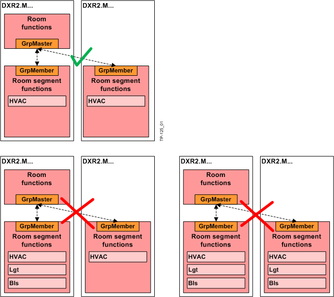

Moving room segments
Room segments can be moved into rooms by drag and drop. Any other moving action (rooms into rooms, rooms into room segments, room segments into room segments) is not allowed.
Room sements in MS/TP devices
With MS/TP the number of commandable group elements is restricted, and communication is too slow for light and shading operation. Hence, the grouping of several room segments is only possible with HVAC.
 CAUTION
CAUTION

Grouping of several room segments with MS/TP only allowed for HVAC
The engineered solution only works, if solely HVAC applications are present in both room segments. There is no automatic algorithm in ABT, which prevents a faulty grouping.
- On MS/TP devices, only group room segments with HVAC applications.

Move a room segment
- Select a room segment.
- Drag and drop the room segment into a room.
Moving segments has an influence on enabling and disabling rooms:
- If a room segment is added to a disabled room, the room is enabled again.
- If the last room segment has been moved out of a room, the room is disabled.